Course Information
Today: Limits and Continuity
Next: Partial Derivatives
Office Hours:
- Monday, Friday: 9:45 PM - 11:00 PM (MATH 842)
- Thursday: 11:00 AM - 12:00 PM (MATH 842)
- Thursday: 12:15 PM - 1:15 PM (Windsor)
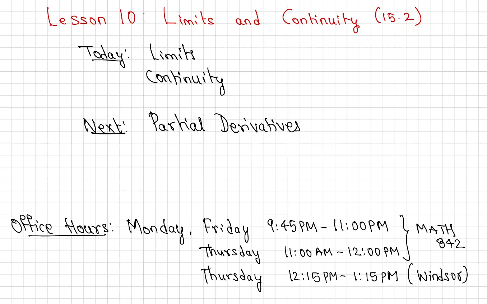
Today: Limits and Continuity
Next: Partial Derivatives
Office Hours:
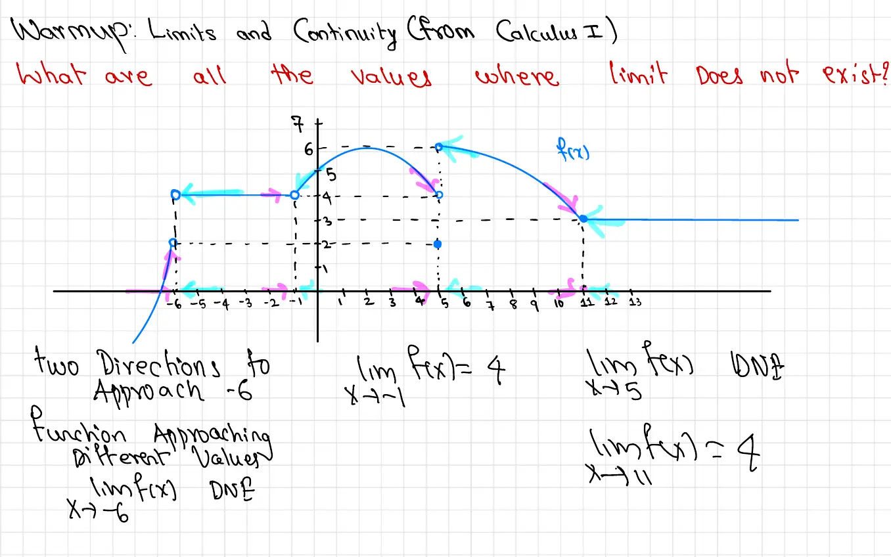
Question: What are all the values where the limit does not exist?
Graph Description: A piecewise function \(f(x)\) is shown on a coordinate plane with \(x\)-axis ranging from approximately \(-6\) to \(13\) and \(y\)-axis ranging from \(0\) to \(7\). The graph displays several types of discontinuities:
At \(x = -6\): Two directions to approach \(-6\), and the function approaches different values from different directions.
\[\lim_{x \to -6} f(x) = 4 \quad \text{and} \quad \lim_{x \to -6} f(x) \text{ DNE}\]
At \(x = -1\): The function approaches different values from the left and right.
\[\lim_{x \to -1} f(x) \text{ DNE}\]
At \(x = 5\): There is a removable discontinuity (hole), but the limit exists.
\[\lim_{x \to 5} f(x) = 4\]
However, \(f(5) = 2\), so the limit exists but \(\lim_{x \to 5} f(x) \neq f(5)\).
At \(x = 11\): The function is continuous.
\[\lim_{x \to 11} f(x) = f(11) = 3\]
Summary: The limit does not exist (DNE) at \(x = -6\) and \(x = -1\) because the function approaches different values from different directions at these points.
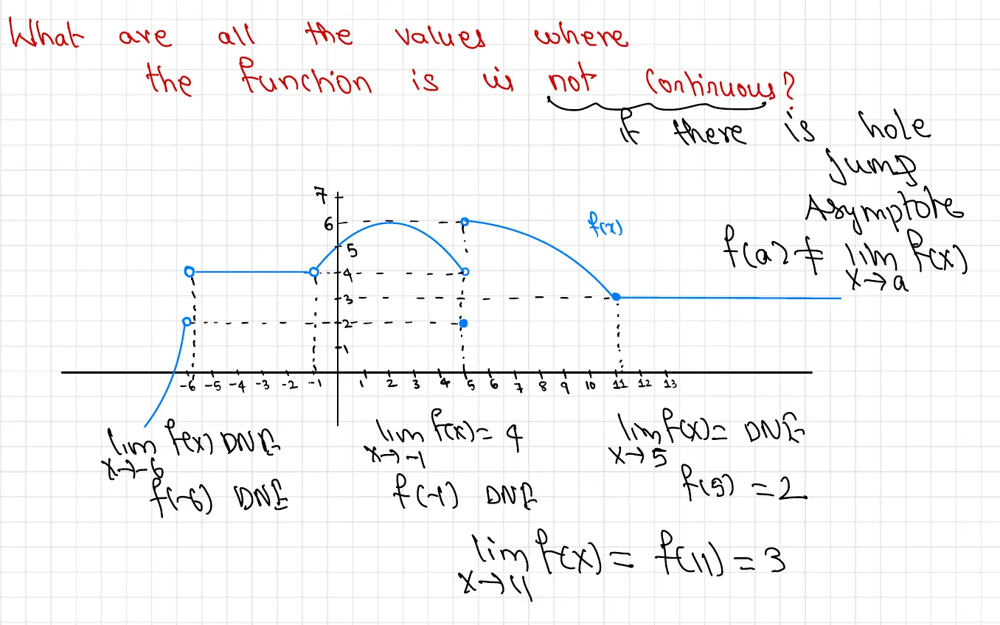
Question: What are all the values where the function is not continuous?
Graph Description: The same graph from the previous page is shown with annotations identifying three types of discontinuities: a hole (removable discontinuity), a jump discontinuity, and an asymptote. The annotations clarify the relationship between function values and limits at critical points.
Types of Discontinuities:
At \(x = -6\):
\[\lim_{x \to -6} f(x) \text{ DNE}\]
\[f(-6) \text{ DNE}\]
The function has an asymptote at \(x = -6\).
At \(x = -1\):
\[\lim_{x \to -1} f(x) = 4\]
\[f(-1) \text{ DNE}\]
The function has a jump discontinuity at \(x = -1\).
At \(x = 5\):
\[\lim_{x \to 5} f(x) \text{ DNE}\]
\[f(5) = 2\]
The function has a hole (removable discontinuity) at \(x = 5\).
At \(x = 11\):
\[\lim_{x \to 11} f(x) = f(11) = 3\]
The function is continuous at \(x = 11\).
Key Point: A function is continuous at \(x = a\) if and only if:
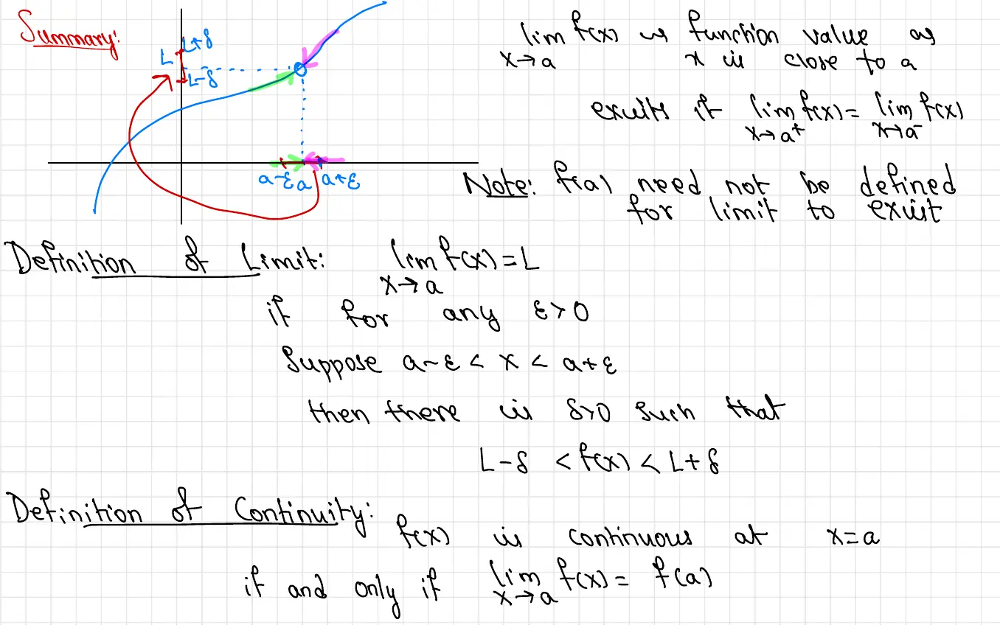
Summary: \(\lim_{x \to a} f(x) = L\) means the function value is close to \(L\) when \(x\) is close to \(a\).
This is equivalent to saying:
\[\lim_{x \to a^-} f(x) = \lim_{x \to a^+} f(x)\]
Graph Description: A coordinate system shows a curve approaching a limit point. The vertical axis is marked with \(L + \delta\), \(L\), and \(L - \delta\), illustrating an epsilon neighborhood around the limit value \(L\). The horizontal axis shows \(a - \varepsilon\), \(a\), and \(a + \varepsilon\), representing a delta neighborhood around \(a\). Multiple curves approach the point from different directions, all converging to the same limit value within the epsilon band.
Definition of Limit: \(\lim_{x \to a} f(x) = L\)
if for any \(\varepsilon > 0\), suppose \(a - \delta < x < a + \varepsilon\), then there is \(\delta > 0\) such that
\[L - \delta < f(x) < L + \delta\]
Note: \(f(a)\) need not be defined for the limit to exist.
Definition of Continuity: \(f(x)\) is continuous at \(x = a\) if and only if
\[\lim_{x \to a} f(x) = f(a)\]
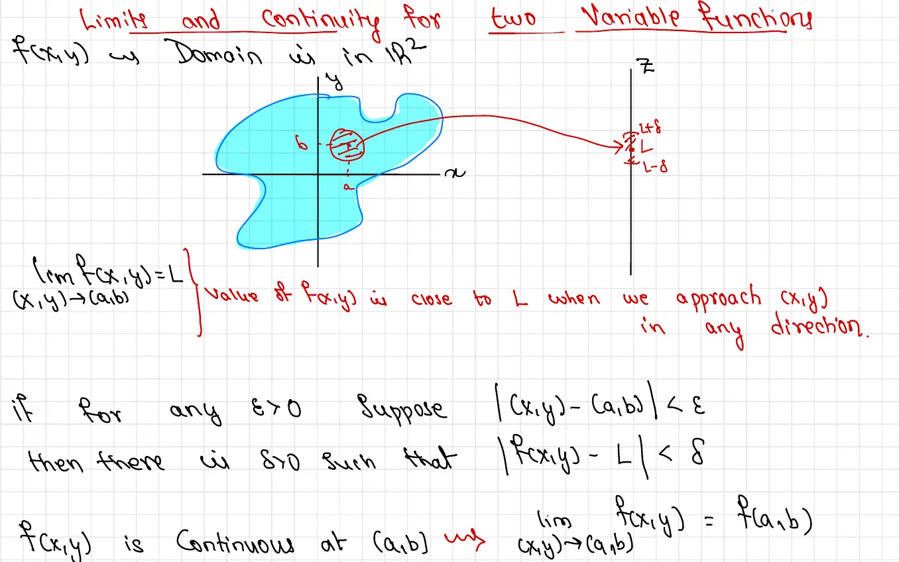
For functions \(f(x,y)\) with domain in \(\mathbb{R}^2\):
Diagram Description: A three-dimensional representation shows a surface in \(xyz\)-space. The domain is illustrated as a shaded region in the \(xy\)-plane. A point \((a,b)\) in the domain is marked, with a small circular neighborhood (disk) \(\delta\) around it. The function values within this neighborhood approach a limit \(L\) on the \(z\)-axis, shown with an epsilon band \(L \pm \delta\). Multiple arrows indicate approaching the point \((a,b)\) from any direction in the plane.
Definition: \(\lim_{(x,y) \to (a,b)} f(x,y) = L\)
This means the value of \(f(x,y)\) is close to \(L\) when we approach \((x,y)\) from \((a,b)\) in any direction.
Formal Definition: For any \(\varepsilon > 0\), suppose \(|(x,y) - (a,b)| < \varepsilon\), then there is \(\delta > 0\) such that
\[|f(x,y) - L| < \delta\]
Continuity: \(f(x,y)\) is continuous at \((a,b)\) if and only if
\[\lim_{(x,y) \to (a,b)} f(x,y) = f(a,b)\]
Key Difference: For two-variable functions, we must approach the point from any direction in the plane, not just from left and right as in single-variable calculus. This makes showing limits do not exist easier (find two paths with different limits) but makes proving limits exist more challenging.
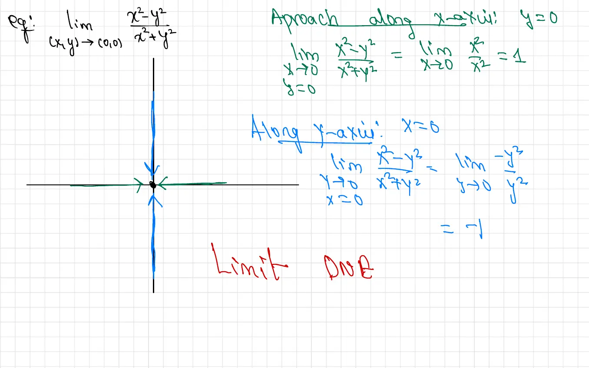
Graph Description: A coordinate system shows multiple arrows pointing toward the origin \((0,0)\) from different directions. The arrows illustrate various paths of approach: along the \(x\)-axis, along the \(y\)-axis, and along other directions in the \(xy\)-plane.
Solution: We will show this limit does not exist by approaching \((0,0)\) along different paths and obtaining different limit values.
Approach along \(x\)-axis (\(y = 0\)):
\[\lim_{x \to 0} \frac{x^2 - 0^2}{x^2 + 0^2} = \lim_{x \to 0} \frac{x^2}{x^2} = 1\]
Approach along \(y\)-axis (\(x = 0\)):
\[\lim_{y \to 0} \frac{0^2 - y^2}{0^2 + y^2} = \lim_{y \to 0} \frac{-y^2}{y^2} = -1\]
Conclusion: Since approaching along \(y = 0\) gives a limit of \(1\) while approaching along \(x = 0\) gives a limit of \(-1\), and these values are different, the limit does not exist.
\[\lim_{(x,y) \to (0,0)} \frac{x^2 - y^2}{x^2 + y^2} \text{ DNE}\]
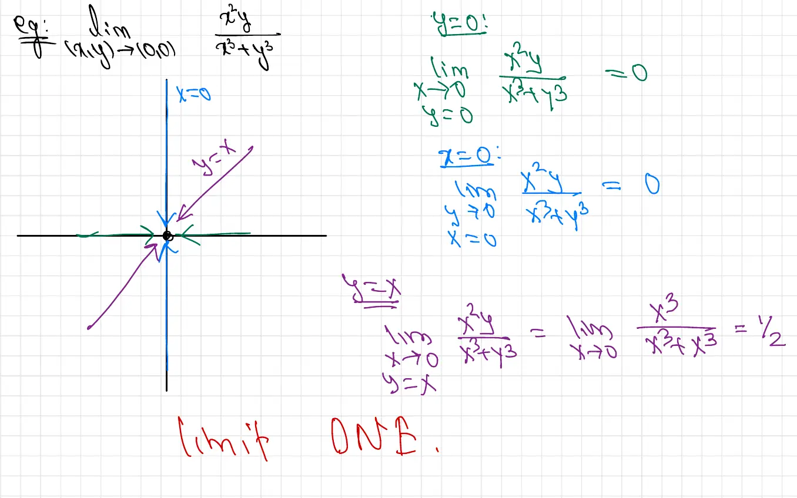
Graph Description: The coordinate system shows additional paths approaching the origin, including diagonal lines \(y = x\) and \(y = -x\), as well as the axes \(x = 0\) and \(y = 0\). Arrows indicate the direction of approach along each path.
Testing different paths:
Along \(y = 0\):
\[\lim_{x \to 0} \frac{x \cdot 0}{x^2 + 0^2} = \lim_{x \to 0} \frac{0}{x^2} = 0\]
Along \(x = 0\):
\[\lim_{y \to 0} \frac{0 \cdot y}{0^2 + y^2} = \lim_{y \to 0} \frac{0}{y^2} = 0\]
Along \(y = x\):
\[\lim_{x \to 0} \frac{x \cdot x}{x^2 + x^2} = \lim_{x \to 0} \frac{x^2}{2x^2} = \frac{1}{2}\]
Along \(y = -x\):
\[\lim_{x \to 0} \frac{x \cdot (-x)}{x^2 + (-x)^2} = \lim_{x \to 0} \frac{-x^2}{2x^2} = -\frac{1}{2}\]
Since different paths yield different limits (\(0\), \(\frac{1}{2}\), and \(-\frac{1}{2}\)), the limit does not exist.
\[\lim_{(x,y) \to (0,0)} \frac{xy}{x^2 + y^2} \text{ DNE}\]
Strategy: To show a limit does not exist, find two different paths that give different limit values. Common paths to test include the coordinate axes, lines through the origin (\(y = mx\)), and parabolic or other curved paths.
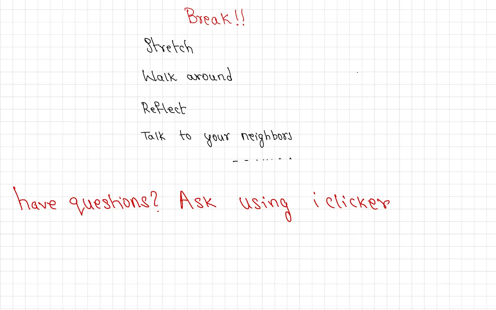
Break Activities:
Have questions? Ask using iclicker
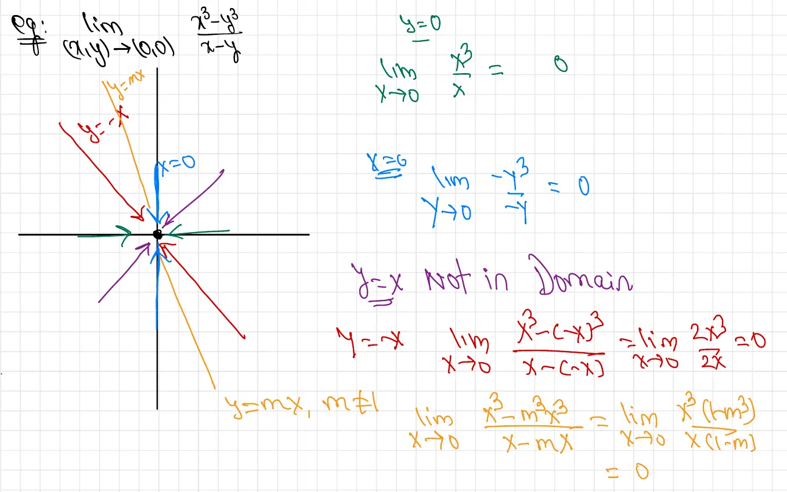
Graph Description: The diagram shows multiple paths approaching the origin, including the coordinate axes and diagonal lines. Various colored lines (red, orange, blue, purple) represent different linear paths \(y = mx\) with different slopes, and the axes \(x = 0\) and \(y = 0\).
Testing paths:
Along \(y = 0\):
\[\lim_{x \to 0} \frac{x^3 - 0}{x} = \lim_{x \to 0} \frac{x^3}{x} = 0\]
Along \(x = 0\):
\[\lim_{y \to 0} \frac{0 - y^3}{-y} = \lim_{y \to 0} \frac{-y^3}{-y} = 0\]
Along \(y = x\): Not in domain since \(y = x\) makes the denominator zero.
Along \(y = -x\):
\[\lim_{x \to 0} \frac{x^3 - (-x)^3}{x - (-x)} = \lim_{x \to 0} \frac{x^3 + x^3}{2x} = \lim_{x \to 0} \frac{2x^3}{2x} = 0\]
Along \(y = mx\) where \(m \neq 1\):
\[\lim_{x \to 0} \frac{x^3 - (mx)^3}{x - mx} = \lim_{x \to 0} \frac{x^3 - m^3x^3}{x(1-m)} = \lim_{x \to 0} \frac{x^3(1-m^3)}{x(1-m)} = 0\]
Observation: All tested paths give a limit of \(0\). However, this does not prove the limit exists—we would need to test all possible paths or use a more rigorous method.
Warning: Testing several paths and getting the same limit value does not prove the limit exists. You must either test all possible paths (usually impossible) or use algebraic techniques to prove the limit rigorously.
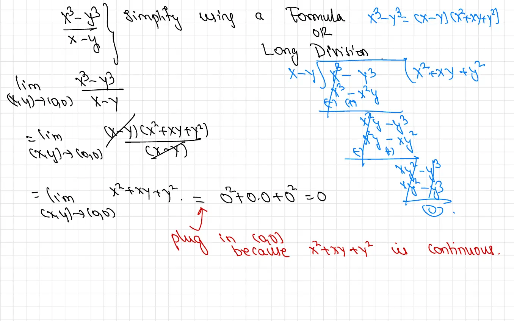
Method 1: Simplify using a formula
We can use the factorization formula: \(x^3 - y^3 = (x-y)(x^2 + xy + y^2)\)
\[\lim_{(x,y) \to (0,0)} \frac{x^3 - y^3}{x - y} = \lim_{(x,y) \to (0,0)} \frac{(x-y)(x^2 + xy + y^2)}{(x-y)}\]
Cancel the common factor \((x-y)\) (valid since we're taking a limit, not evaluating at \(x = y\)):
\[= \lim_{(x,y) \to (0,0)} (x^2 + xy + y^2)\]
Now plug in \((0,0)\) since \(x^2 + xy + y^2\) is continuous:
\[= 0^2 + 0 \cdot 0 + 0^2 = 0\]
Method 2: Long Division
The handwritten work shows the polynomial long division of \(\frac{x^3 - y^3}{x - y}\), which yields \(x^2 + xy + y^2\).
Conclusion: \(\lim_{(x,y) \to (0,0)} \frac{x^3 - y^3}{x - y} = 0\)
Key Technique: When a function simplifies to a continuous function after algebraic manipulation, we can evaluate the limit by direct substitution. This is because continuous functions preserve limits.
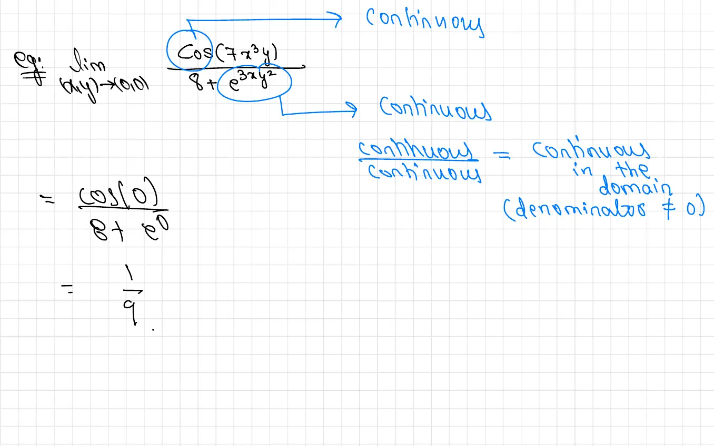
Solution: We recognize that both the numerator and denominator are continuous functions.
The numerator \(\cos(7x^3y)\) is continuous everywhere because:
The denominator \(8 + e^{3xy^2}\) is continuous everywhere and never zero because:
Since both numerator and denominator are continuous and the denominator is never zero, the entire function is continuous throughout the domain. Therefore, we can evaluate the limit by direct substitution:
\[\lim_{(x,y) \to (0,0)} \frac{\cos(7x^3y)}{8 + e^{3xy^2}} = \frac{\cos(0)}{8 + e^0} = \frac{1}{8 + 1} = \frac{1}{9}\]
Continuity Properties:
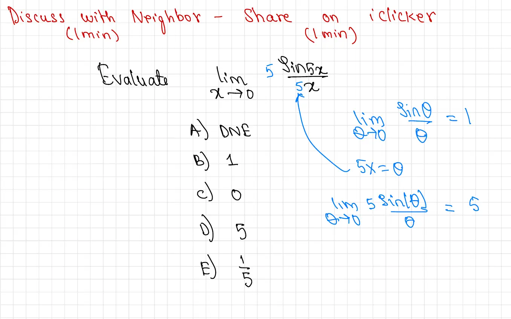
Answer choices:
Solution:
We can rewrite the expression to use the standard limit \(\lim_{\theta \to 0} \frac{\sin \theta}{\theta} = 1\):
\[\lim_{x \to 0} \frac{5 \sin(5x)}{5x}\]
Notice that if we let \(\theta = 5x\), then as \(x \to 0\), we have \(\theta \to 0\):
\[= \lim_{\theta \to 0} \frac{5 \sin \theta}{\theta}\]
\[= 5 \cdot \lim_{\theta \to 0} \frac{\sin \theta}{\theta}\]
\[= 5 \cdot 1 = 5\]
Answer: D) 5
Standard Limit: \(\lim_{x \to 0} \frac{\sin x}{x} = 1\)
This is a fundamental limit often used in calculus. When the argument is scaled, adjust accordingly: \[\lim_{x \to 0} \frac{\sin(kx)}{x} = k \quad \text{and} \quad \lim_{x \to 0} \frac{\sin(kx)}{kx} = 1\]
Instructions: Discuss with neighbor (1 min), then share on iclicker (1 min)
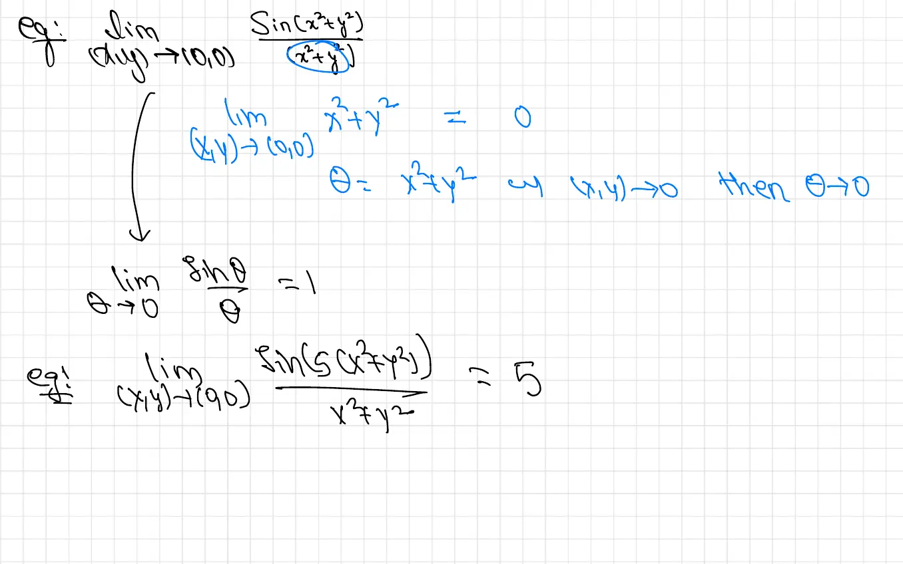
Method 1: Substitution
Let \(\theta = x^2 + y^2\). Note that as \((x,y) \to (0,0)\), we have \(\theta \to 0^+\) (since \(x^2 + y^2 \geq 0\) with equality only at the origin).
Then:
\[\lim_{(x,y) \to (0,0)} \frac{\sin(x^2 + y^2)}{x^2 + y^2} = \lim_{\theta \to 0^+} \frac{\sin \theta}{\theta} = 1\]
Method 2: Composition of Continuous Functions
We can write this as a composition:
\[\lim_{(x,y) \to (0,0)} \frac{\sin(x^2 + y^2)}{x^2 + y^2}\]
First, observe that \(\lim_{(x,y) \to (0,0)} (x^2 + y^2) = 0\).
Since \(\lim_{t \to 0} \frac{\sin t}{t} = 1\) and this function is continuous near \(t = 0\) (with the removable discontinuity filled), we can compose:
\[\lim_{(x,y) \to (0,0)} \frac{\sin(x^2 + y^2)}{x^2 + y^2} = 1\]
Answer: 1
Solution:
Using similar reasoning with \(\theta = x^2 + y^2\):
\[\lim_{(x,y) \to (0,0)} \frac{\sin(5(x^2 + y^2))}{x^2 + y^2} = \lim_{\theta \to 0} \frac{\sin(5\theta)}{\theta} = 5 \cdot \lim_{\theta \to 0} \frac{\sin(5\theta)}{5\theta} = 5 \cdot 1 = 5\]
Key Observation: When dealing with limits involving \(x^2 + y^2\) as \((x,y) \to (0,0)\), we can often substitute \(\theta = x^2 + y^2\) and use the fact that \(\theta \to 0^+\) to apply single-variable limit techniques.
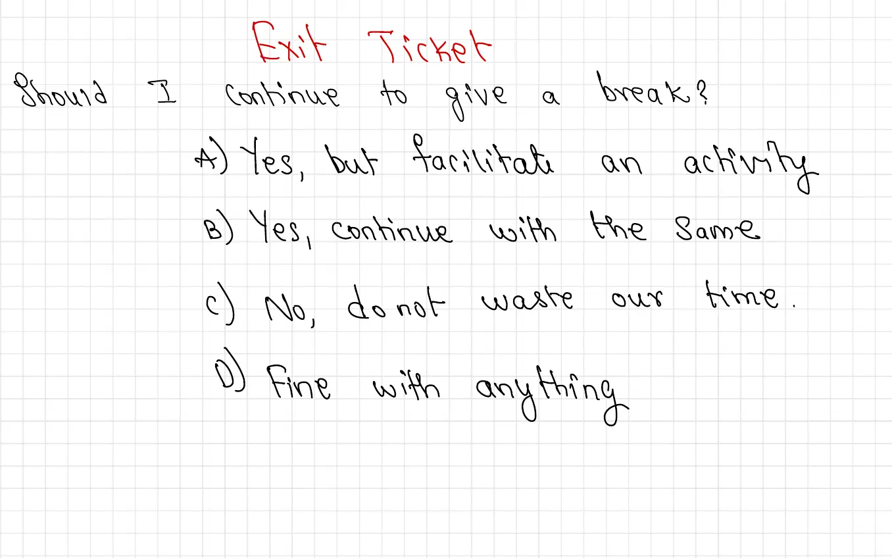
Question: Should I continue to give a break?
Answer choices:
This exit ticket helps the instructor gather feedback about class structure and student preferences for break time during lectures.